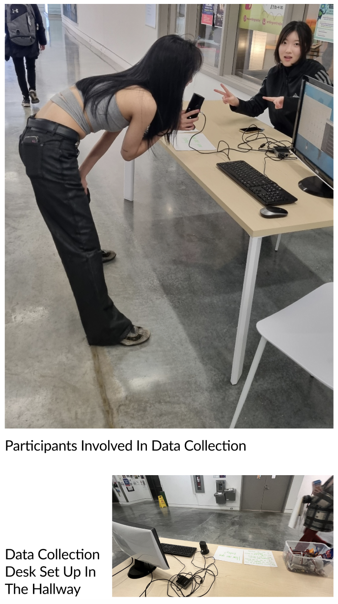

DATA COLLECTION
Recorded data was collected automatically using a Raspberry Pi, microphone, and Python coding. The coding is to automatically activate the microphone and record for 7 seconds when noise exceeds a certain decibel is measured.
Our Voice Record participants were mostly students, especially Emily Carr students, and we collected data in a survey format. We asked about 100 students how they were, and were able to We collect 100 data pieces of the question.
The recorded file was saved on the Raspberry Pi as a .wav file and converted to .mp3 through editing.
We took into account the emotions contained in the collected response data and separated them into one of three groups: positive, neutral, and negative. 20% of the answers contained negative emotions, 30% contained positive emotions, and 50% contained neutral emotions. Most participants preferred short answers, and those who answered longer than 5 seconds mostly included positive emotions in their answers.
